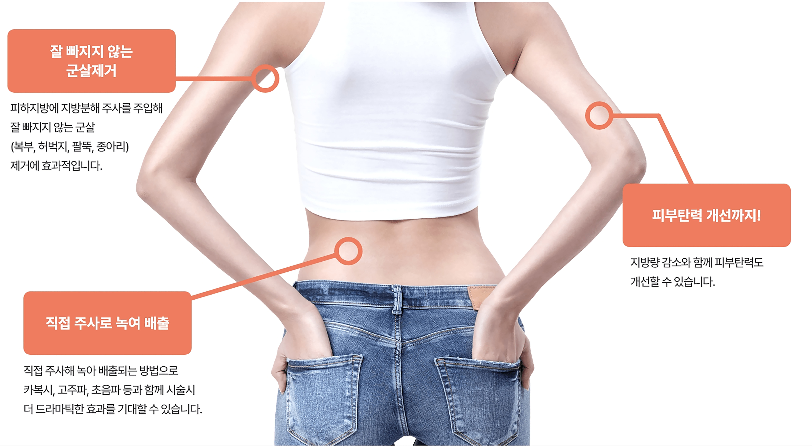
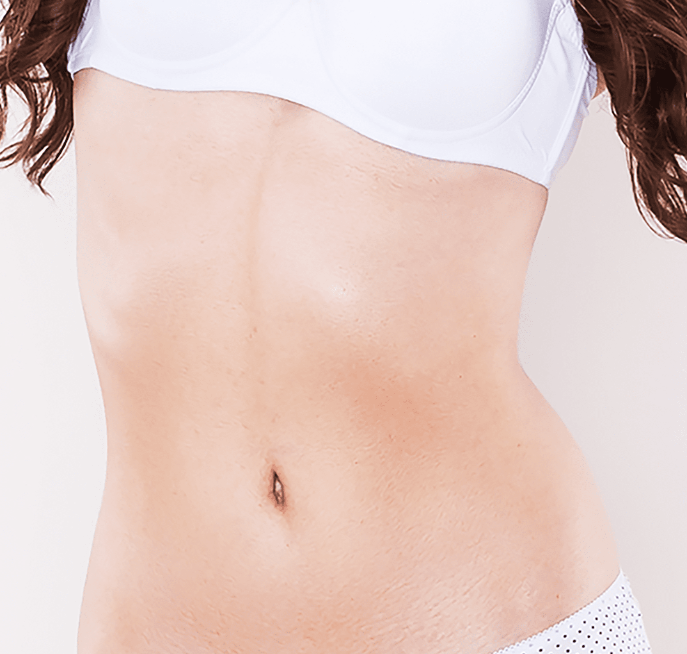
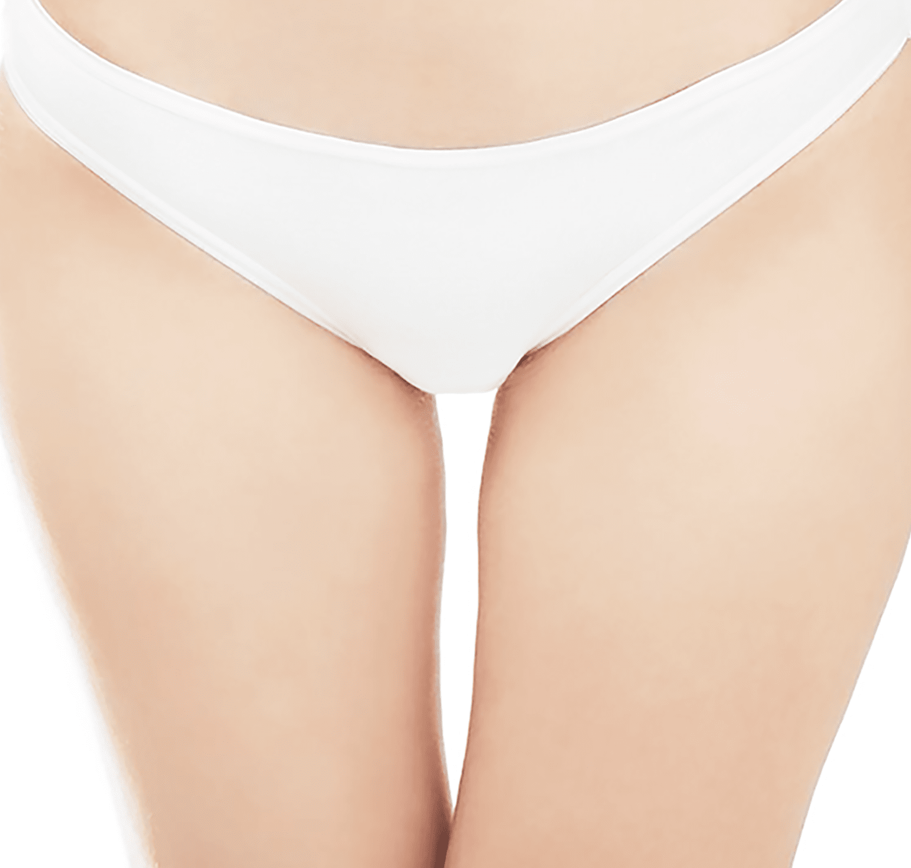

나를 위한 리포 주사
나를위한 산부인과의
“리포 주사”
는 의료진의 노하우와 기술력으로
수술없이 간편하게 지방 세포를 줄여주는 주사 시술입니다
- 시술시간 15분 내외
-
회복기간
시술 후
일상생활 가능 - 입원여부 없음
- 마취방법 수면마취 가능
- 시술횟수 제한 없음
나를위한 리포 주사
지방 세포를 줄여주는 방법입니다.
리포 주사는 나를위한만의 노하우로 지방과 근육,
셀룰라이트까지 잡아주는 주사 시술입니다.
- 군살 제거
- 피부 탄력
- 지방량 감소
리포 주사 장점
- 지방량 감소
- 셀룰라이트 감소
- 군살 제거
- 피부 탄력 증대
- 부분적 몸매 교정
리포 주사 특징

-
잘 빠지지 않는
군살 제거피하지방에 지방분해
주사를 주입해
잘 빠지지 않는 군살
(복부, 허벅지, 팔뚝, 종아리)
제거에 효과적입니다. -
직접 주사로
녹여 배출직접 주사해 녹아
배출되는 방법으로
카복시, 고주파, 초음파
등과 함께 시술시 더
드라마틱한 효과를
기대할 수 있습니다. -
피부 탄력
개선 까지!지방량 감소와 함께
피부 탄력도
개선할 수 있습니다.
리포 주사 시술 부위
-
팔뚝 + 앞 뒤 날개
-
복부 + 옆구리

-
허벅지 안쪽 / 바깥쪽

리포 주사 대상자
-
리포 주사 효과를 빨리 보고 싶으신 분
-
지방 흡입으로 인한 울퉁불퉁한 라인으로
고민이신 분들 -
몸매 라인의 비대칭 부작용으로 고민이신 분들
-
출산 후, 급격한 다이어트로 인한 늘어진
피부로 고민이신 분들 -
팔뚝, 복부, 허벅지, 종아리등에
유난히 살이 많으신 분들 -
빠른 시간 내로 감량 효과를 원하시는 경우
리포 주사
시술 후 주의사항
시술 후 주의 사항은 개인 차가 있을 수 있습니다.
-
01
시술 후 하루 정도는 피부가 붓고 붉어질 수 있습니다.
-
02
시술 후 일주일 정도는 사우나나 고온의 목욕탕 방문을
피해주세요. -
03
시술 후 부기나 이물감, 멍이 나타날 수 있으나 자연스럽게
완화됩니다. -
04
시술 후 3~5일 정도는 금연, 금주해 주시고 무리한 운동은
피해주세요. -
05
시술 후 시술 부위를 만지거나 자극하지 말아주세요.